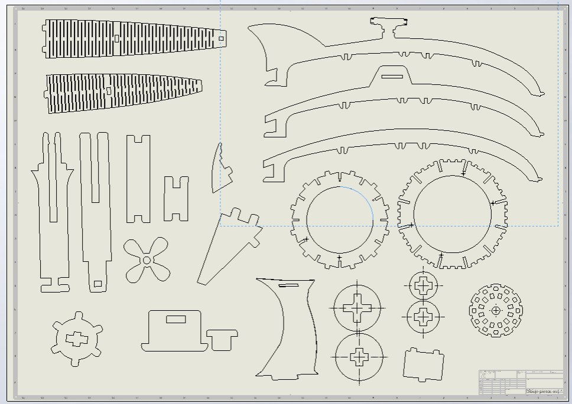
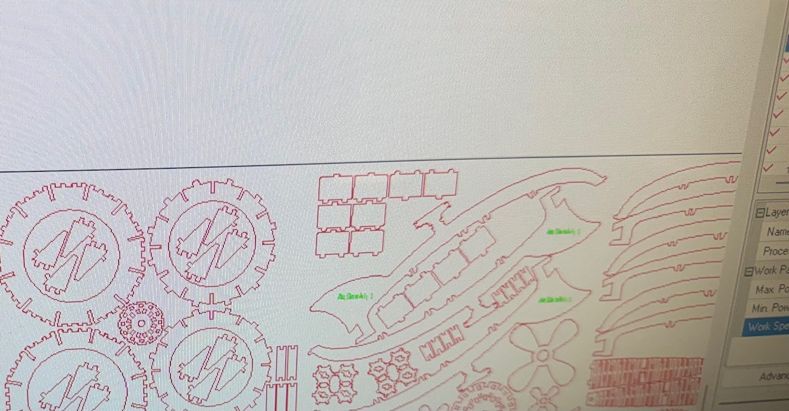
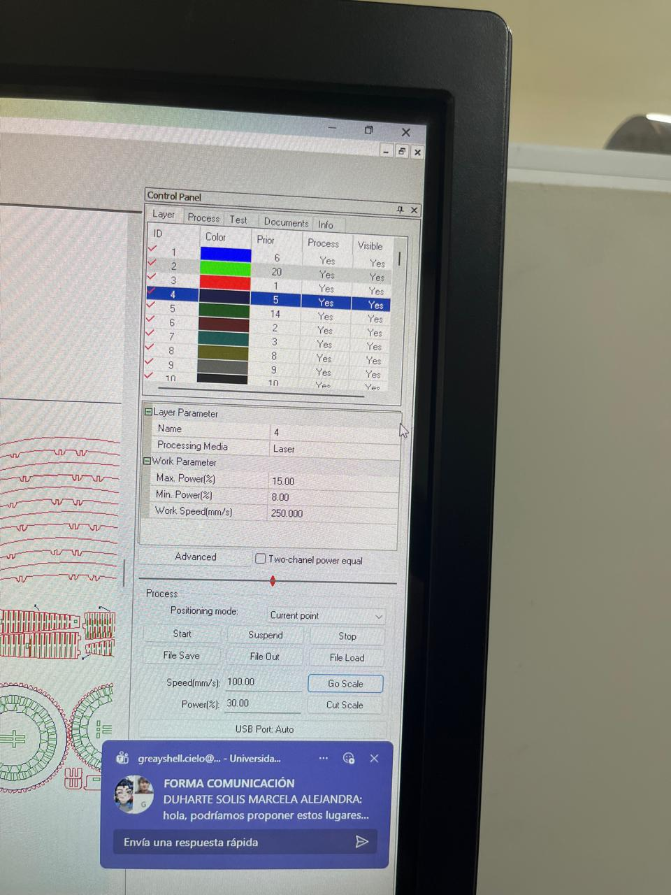
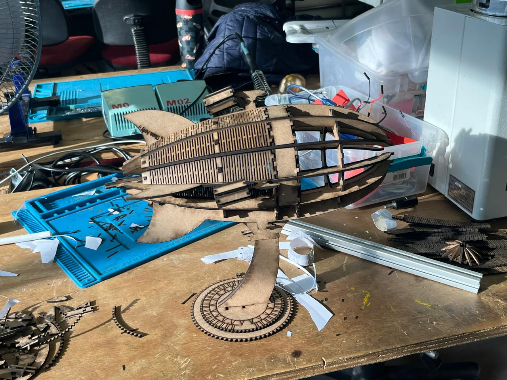
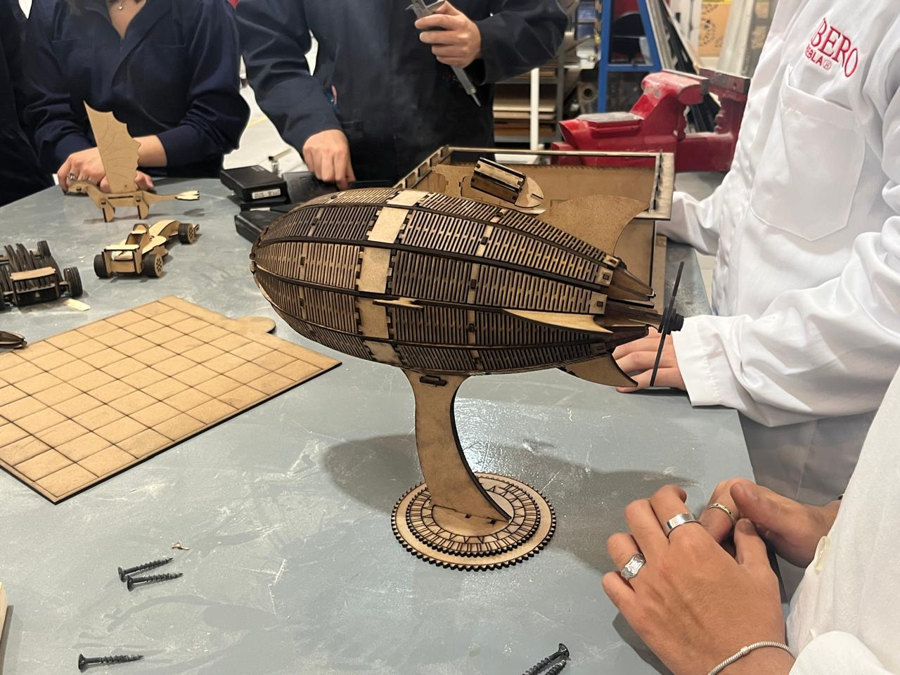
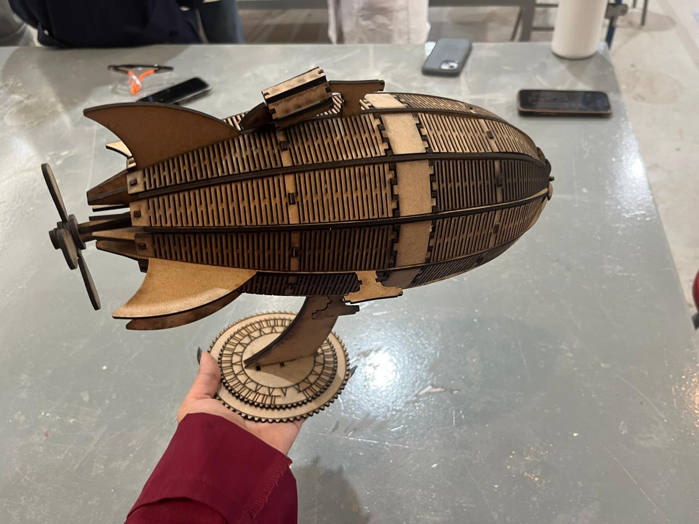

Reporte de Práctica: Ensambles en SolidWorks y Corte Láser
Institución: IBERO Puebla Clase: Proyecto de Ingeniería I Fecha: 11 de Septiembre de 2026
1. Objetivos de la Práctica
- Entender a fondo los principios de tolerancia dimensional y el ancho de corte (kerf) al fabricar piezas mediante láser.
- Conocer los materiales permitidos en las máquinas del taller, así como identificar aquellos prohibidos debido a los riesgos críticos para la salud y el equipo.
- Aplicar herramientas de diseño avanzado en SolidWorks (como simetrías y patrones) para agilizar el modelado de componentes.
- Desarrollar ensambles 3D para comprobar que las piezas encajen de manera precisa antes de mandarlas a fabricar.
- Generar planos y exportar archivos vectoriales optimizados para el software de control de la cortadora.
2. Fundamentos Técnicos: Tolerancia y Kerf
Durante el corte láser, un haz de luz concentrada evapora o funde el material sobre el que incide. Debido a este efecto térmico, la máquina deja un pequeño surco vacante a lo largo de toda la trayectoria.
El Kerf (Ancho de Sangría): Es el grosor real del material que se desvanece por el calor del láser. Para que las uniones mecánicas (como los ensambles de ranura o a presión) queden firmes, las dimensiones del diseño digital deben ajustarse tomando en cuenta este margen.
Por su parte, la tolerancia define el rango aceptable de variación geométrica para garantizar que los elementos embonen sin quedar demasiado flojos ni bloqueados por interferencias.
3. Clasificación de Materiales para Corte Láser
3.1. Materiales Autorizados en el Laboratorio
| Material | Estado | Aplicaciones Comunes |
|---|---|---|
| Papel y Cartón | ✔️ Permitido | Pruebas volumétricas, maquetas y validación rápida de formas. |
| MDF / Triplay | ✔️ Permitido | Estructuras rígidas, cajas de ensamble y maquetación avanzada. |
| Acrílico | ✔️ Permitido | Carcasas estéticas, displays y piezas traslúcidas. |
| Goma EVA y Textiles | ✔️ Permitido | Elementos flexibles, sellos o protectores de impacto. |
| Piel / Cuero | ✔️ Permitido | Prototipos de accesorios (requiere buena extracción de humos). |
3.2. Materiales Estrictamente Prohibidos
| Material Restringido | Peligro / Razón Principal |
|---|---|
| PVC (Policloruro de Vinilo) | Al fundirse expulsa gas cloro y ácido clorhídrico, dañando severamente la estructura metálica del equipo y afectando las vías respiratorias. |
| Poliestireno / Unicel | Se deforma de forma irregular en lugar de cortar, generando residuos altamente inflamables. |
| Policarbonato (Lexan) | Produce humos densos y tóxicos, además de mancharse y quemarse sin lograr un corte limpio. |
4. Proceso de Manufactura y Operación
- Vectorización: Se exporta el modelo de SolidWorks en formato DXF o DWG, revisando que no queden líneas duplicadas o abiertas.
- Parámetros de Corte: Se configuran la potencia, la velocidad y la frecuencia óptimas según la densidad del material seleccionado.
- Calibración del Enfoque: Se ajusta la distancia vertical correcta entre el cabezal del láser y la placa mediante el calibrador físico.
- Seguridad y Arranque: Se activa el sistema de extracción de aire antes de iniciar el trabajo y se vigila la máquina durante todo el proceso.
5. Bitácora de Fallas y Soluciones
| Proceso | Inconveniente Detectado | Motivo Raíz | Acción Correctiva Aplicada |
|---|---|---|---|
| Corte en MDF | Las piezas ensambladas tenían demasiada holgura y bailaban. | No se contempló la compensación del kerf al trazar las ranuras en el software. | Modificar las dimensiones de las cavidades en SolidWorks restando el margen del kerf para generar fricción. |
| Corte en acrílico | La parte inferior quedó con rebabas fundidas y no separó bien. | Exceso de velocidad y potencia insuficiente en el parámetro de la máquina. | Reducir la velocidad de avance del cabezal y realizar un ensayo previo en un trozo sobrante. |
| Exportación de trazos | Las líneas aparecían cortadas en segmentos o duplicadas en el programa láser. | Fusión deficiente de entidades al convertir el croquis 3D de SolidWorks a 2D. | Limpiar y unir los vectores directamente en el plano antes de exportar el archivo final. |
6. Aprendizajes del Taller
Esta práctica nos permitió conectar el diseño digital paramétrico con la realidad de los procesos de manufactura en el laboratorio. Comprendimos por qué es vital acatar las restricciones de seguridad con los materiales (evitando compuestos peligrosos como el PVC) y aprendimos a calcular las tolerancias de acoplamiento basándonos en el ancho del láser, logrando ensambles sólidos y funcionales sin necesidad de adhesivos.
7. Anexos y Evidencia Fotográfica
A continuación se muestran los registros gráficos capturados durante la práctica en el IDIT de la Ibero Puebla, desde el modelado tridimensional hasta la pieza final.
7.1. Modelado en Solid Works

Figura 1: Plano de piezas utilizadas en la figura del zeppelin, creado en Solid Works.7.2. Optimización de espacio

Figura 2: Organización y distribución eficiente de las piezas para reducir la cantidad de material utilizado.7.3. Operación de la Cortadora Láser

Figura 3: Configuración de "Max Power, Min Power" y "Work Speed" utilizado para cortar la pieza en MDF.
Figura 4: Proceso de ensamblaje de figura de Zeppelin.7.4. Resultado Final y Verificación Física


Figuras 5 y 6: Modelo ya ensamblado y completo.